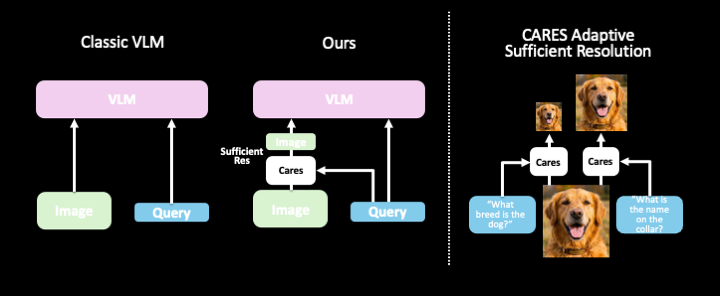

Context-Aware Resolution Selector for Vision Language Models
Different visual understanding tasks require different levels of image detail. A document analysis task might need high resolution to recognize small text, while a general image classification task might work well at lower resolutions. CARES learns this mapping, dynamically selecting the optimal resolution for each input without sacrificing accuracy.
The method achieves an average of 63% FLOPs savings across diverse benchmarks (Ai2D, ChartQA, DocVQA, OCRBench, SeedBench-2, MMMU, RealWorldQA, InfoVQA, MathVista) while maintaining or improving task performance.
CARES provides two complementary strategies for resolution selection:
Separate binary classifiers predict whether current resolution is sufficient for accurate VLM processing. If not, a higher resolution is selected. Multiple variants leverage different feature extractors:
Direct prediction of optimal resolution without intermediate classification. This approach uses frozen features from specialized models:
These models are particularly effective for specialized domains like document understanding and achieve comparable performance to gate classifiers with fewer parameters.
The CARES methodology involves efficient resolution selection through lightweight classifiers or direct prediction models:

CARES is evaluated on 9 diverse visual understanding tasks:
CARES achieves significant FLOPs reductions (average 63%) while maintaining or improving accuracy across 9 diverse benchmarks. Results shown with CARES applied to state-of-the-art models:
| Model | Ai2D | ChartQA | DocVQA | OCRBench | SeedBench-2 | Average | ||||||
|---|---|---|---|---|---|---|---|---|---|---|---|---|
| Score | ↓FLOPs | Score | ↓FLOPs | Score | ↓FLOPs | Score | ↓FLOPs | Score | ↓FLOPs | Score | ↓FLOPs | |
| Granite-Vision 3.3-2B | 0.736 | — | 0.862 | — | 0.904 | — | 0.796 | — | 0.717 | — | 0.803 | — |
| + CARES | 0.733 | -67% | 0.870 | -69% | 0.904 | -68% | 0.795 | -68% | 0.718 | -44% | 0.804 | -63% |
| InternVL3-8B | 0.836 | — | 0.858 | — | 0.923 | — | 0.851 | — | 0.785 | — | 0.851 | — |
| + CARES | 0.836 | -66% | 0.858 | -68% | 0.923 | -69% | 0.851 | -70% | 0.785 | -44% | 0.851 | -63% |
| Qwen2.5-VL-72B | 0.866 | — | 0.874 | — | 0.955 | — | 0.752 | — | 0.807 | — | 0.851 | — |
| + CARES | 0.870 | -85% | 0.836 | -77% | 0.948 | -84% | 0.755 | -64% | 0.785 | -77% | 0.852 | -80% |
| GPT-4o | 0.780 | — | 0.556 | — | 0.801 | — | 0.770 | — | 0.757 | — | 0.733 | — |
| + CARES | 0.781 | -60% | 0.557 | -60% | 0.797 | -36% | 0.746 | -33% | 0.754 | -47% | 0.727 | -47% |
CARES consistently reduces computational cost by selecting optimal resolutions without sacrificing performance. The method achieves an average of 63% FLOPs savings across all models and benchmarks while maintaining comparable or better accuracy.
Qwen2.5-VL-72B shows the most impressive efficiency gains, achieving up to 85% FLOPs reduction on Ai2D while actually improving accuracy (0.866 → 0.870). This demonstrates CARES' ability to identify redundant computation and focus on task-critical image regions.
We provide pre-trained models, datasets, and code to enable reproducible research and deployment:
Lightweight resolution classification model built on frozen SmolVLM features. Ideal for efficient deployment with minimal latency overhead.
View on Hugging Face →Autoregressive resolution predictor using Granite with LoRA adaptation. Specialized for document understanding and dense visual content.
View on Hugging Face →Comprehensive training dataset combining multiple benchmarks with resolution difficulty annotations. Enables training custom resolution selectors.
View on Hugging Face →Complete codebase with training scripts, inference pipelines, and evaluation utilities. Supports multiple VLM architectures and custom datasets.
GitHub Repository →To use CARES with your own VLM:
If you find CARES useful in your research, please cite our work:
@misc{kimhi2025carescontextawareresolutionselector,
title={CARES: Context-Aware Resolution Selector for VLMs},
author={Moshe Kimhi and Nimrod Shabtay and Raja Giryes and Chaim Baskin and Eli Schwartz},
year={2025},
eprint={2510.19496},
archivePrefix={arXiv},
primaryClass={cs.CV},
}